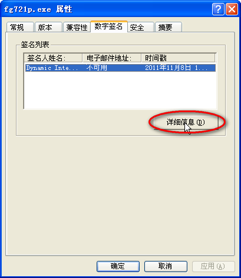
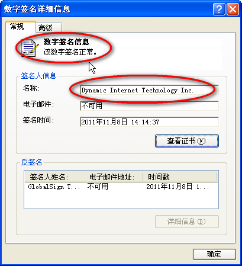

自由的天空
最新更新
2015年10月5日更新：自由门7.57版解决软件不能正常退出的Bug;
2015年7月25日更新：安卓手机软件更新Wujie一点通3.3;
自由门7.57版默认使用A通道，如果你的ISP或者网络环境不能使用A通道或是速度较慢， 可以更换F通道试试看，具体方法可以参考自由门的使用教程。
自由门下载地址
自由门7.57版下载（2015年10月5日发布）：
自由门使用入门教程
自由们系列软件是使用很便捷的绿色穿墙软件，无需安装即可运行，支持目前所有版本的Windows系统，苹果Mac系统可以通过Wine或者虚拟机使用自由们，以下是对软件不熟悉的同学可以阅读的一个简单教程（截图以自由们7.21专业版为例）：
1、下载得到自由们以后，首先应该验证软件的数字签名，以确定软件下载的完整性以及没有被第三方修改过，在Windows XP操作系统下（Win7类似）方法是：在软件图标上单击鼠标右键，在弹出的快捷菜单中选“属性”，然后打开其中的“数字签名”页，双击数字签名或者选上后再点“详细信息”按钮，如下图： 
然后系统会自动验证软件的数字签名是否正确，如果没有问题的话，应该出现“该数字签名正常”的提示窗口，同时“签名人信息”的名称栏中也应该和图中完全一致，如下图所示：这样就说明软件保持软件发行的原样，没有被改动过。如果出现了“该数字签名无效”的提示或者签名人名称和图中所示的不同，那说明软件本身可能下载不完整或者已经被第三方（比如病毒、木马之类）修改过，那就一定要从安全可信的来源从新下载软件。点此继续阅读教程……
自由门Mac系统使用教程
自由门系列软件都是在Windows平台上开发的，目前没有专门的Mac版本，不过还是有比较简单的方法在苹果Mac系统上正常使用软件的，就是通过开源的Wine，Wine是 Unix 系统上的 Windows API实现，使用Wine可以在无需 Windows 授权、无需双系统重启动、无需虚拟机的情况下运行很多Windows软件，具体可以通过mac下一个叫crossover的软件来实现，crossover是wine的商业发行版，而且有GUI图形操作界面，便于操作，软件可从官网下载试用版或购买，网址如下：
http://www.codeweavers.com/products/crossover/。
1、安装好并进入crossover后，点config（配置）菜单下的manage bottles（容器管理）命令，然后点窗口左下角的“+”图标新建一个bottle，名字随意（比如freedom），New Bottle Type（类型）选windows xp；
2、新建好容器后，选中你建立的bottle，点右侧的Applications选项卡，点下面的Install Software按钮，搜索并安装Microsoft Visual C++ 6.0 Redistributable（如果没有，可以试试从微软网站下载VC6的Runtime安装包），之后会提示重启bottle；
3、进入~/library/application support/CrossOver/Bottles路径，可通过在finder的Go（前往）菜单下的Go to folder（前往文件夹）命令后输入“~/library/application support/CrossOver/Bottles”（不含引号）来前往该路径，然后打开与你刚才建立的bottle同名的文件夹，再进入freedom/drive_c/Program Files目录，新建一个文件夹，名为“freemen”。从本站的资源下载中下载最新版的自由们，并移动到该文件夹下。点此继续阅读……
更多资源下载
更多软件和资源下载请点击这里；
收藏本站
关注最新资源的同学请把本站网址：http://jump.dofreesky.com/ 加入浏览器收藏夹。